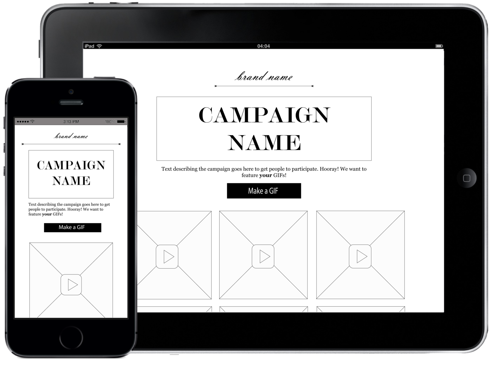

At a Glance
- Role: Interface Designer
- Client: Marketing platform driving user-generated content creation
- Product: GIF Maker
- Deliverables:
- Duration: June 2016 - Present

I designed this product for a marketing platform based in New York City enabling thousands of brands to create their own campaigns for user-generated content. This company is looking to offer a GIF-making campaign to its clients, allowing brands to source GIFs made by their customers.
I was asked by the company's lead designer to design and create a high-fidelity mockup of a GIF maker for mobile devices.
I hadn’t worked with my client's marketing platform before this project and did not have access to the platform when designing this application, so I figured out a number of work-arounds to determine how brands might be using the company’s campaigns, how customizable each campaign generally is, and the features needed to attract engagement from a brand’s consumer base. The GIF Maker had to be recognizable and easy to use without overlapping with existing campaigns or GIF creators on the market.
I was also tasked with making a one-sheet to market the finished GIF Maker to the marketing platform's clients.
The GIF Maker really has two audiences—the brands (the brands using the marketing platform) and the consumers—and designing a working product meant designing a product for both of these different user segments.
To cater to the brands’ needs, I first researched the existing market. I looked into marketing campaigns to determine not only the different ways in which brands seek user-generated content, but also what information brands tend to collect through these campaigns and how that information is collected. I realized that the campaigns are as much about collecting user-generated content as they are about collecting user information, like emails and social media handles. Viewing these campaigns also helped me determine what elements of the GIF Maker would need to be customizable so that a brand could truly take advantage of it. Finally, I determined that the GIF Maker had to be an internet-based experience to be more easily customized and deployed by the brands.
For the customer side, I used existing GIF makers for both web and native mobile apps and drew on this research to compile a list of necessary features for my campaign. Due to time constraints, I mocked up a few different versions of the GIF Maker on paper and used the final two to perform my user testing. During these testing rounds, I presented each user with stills of the two drawn apps and had them walk through the flow, narrating the journey and asking questions along the way. At the end, I asked the users which design they preferred overall.
Overwhelmingly, users were more comfortable with the layout that is reminiscent of Instagram—an application that the brands’ consumers are likely familiar with—and so this is the model I continued building.
From here, I was able to easily flesh out the remaining app pages on pen and paper. A sampling of these sketches is below. In all sketches and mockups, auto-play is disabled for GIFs to be considerate of consumers' data usage. GIFs can be played by touching the GIF area (suggested to the user by the play button) and stopped by again touching the GIF area.
My client, the marketing platform, asked for only a high-fidelity mockup of the main GIF Maker home screen, which you can see below. The image on the left is when viewed from the top of the page, and the image on the right is the view when scrolled down to the bottom of the page. For the demonstration, I included the Zappos branding to illustrate how the mockup would look when active during a campaign.

I also created a mockup for how a campaign may look on a brand’s website. Below is the layout for the brand’s collected and moderated user-generated content. I decided to also disable GIF auto play on this page, again to keep consumers’ data usage in mind. The “Make a GIF” button is the call to action that will open the GIF Maker.
I wish that I had access to the platform accessible to the marketing company's brands during this project to see what the campaigns look like from the brand side, but given my limited resources I am pleased with the way this project turned out. Given more time, I would have done some testing with the finished mockups to determine how users would actually utilize the platform, but more importantly with brands to see what kind of campaigns they would use this tool to put together.